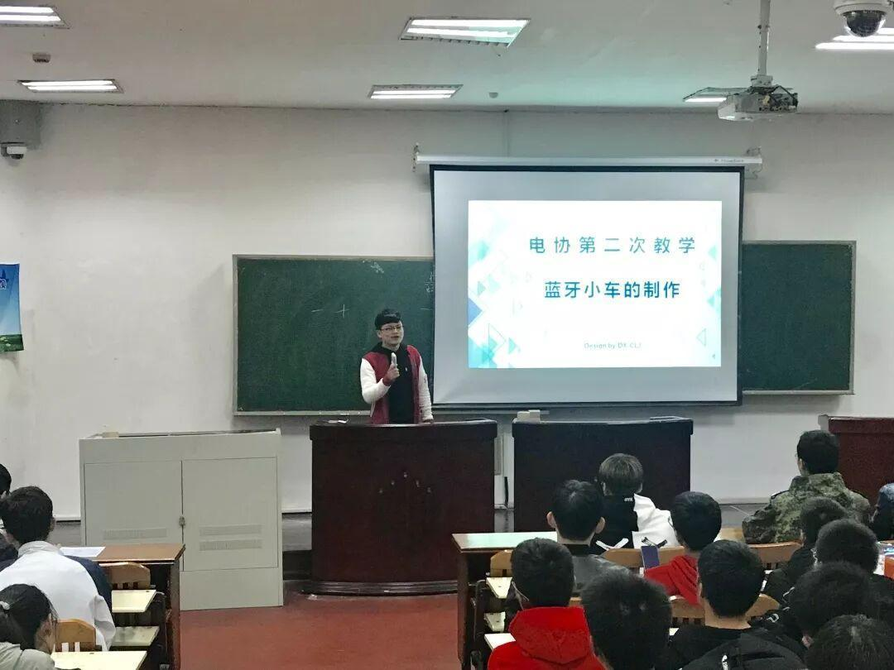
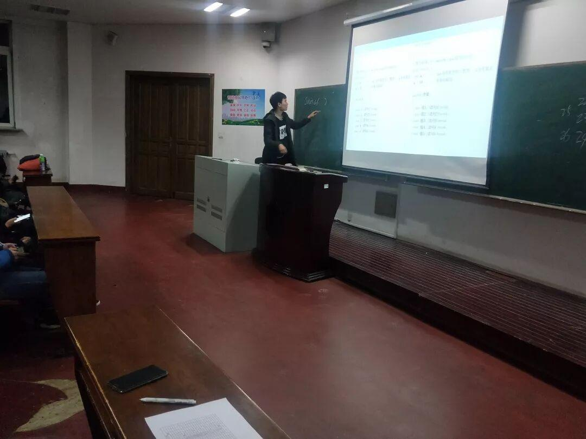
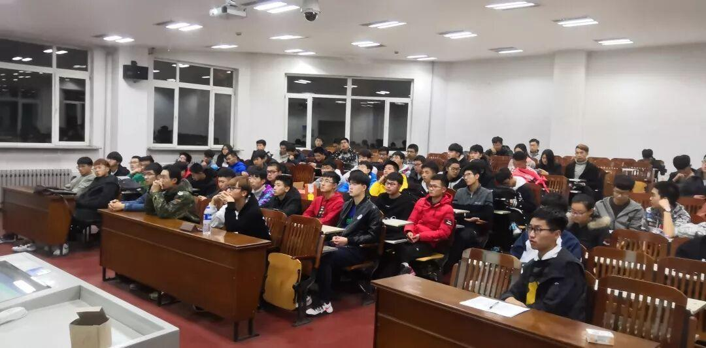
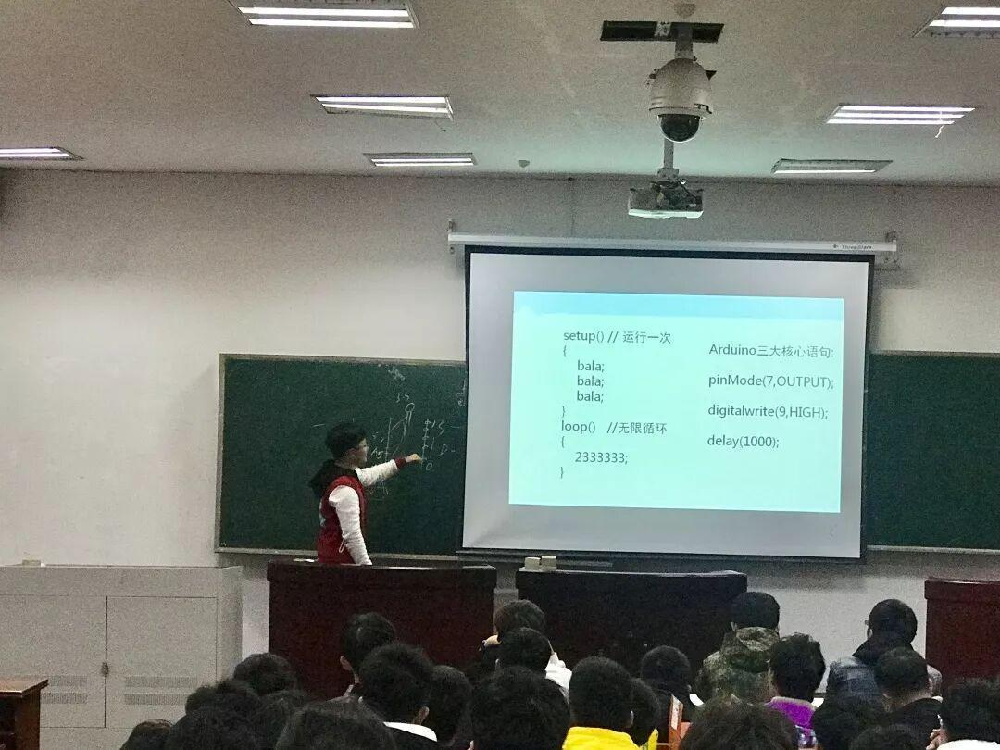
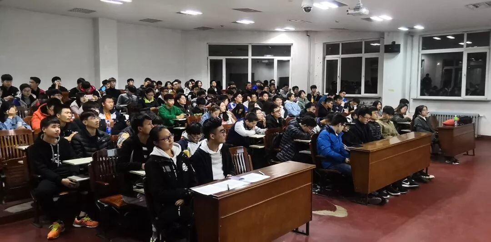

电子技术与应用协会第二次新生教学

再不点蓝字关注，机会就要飞走了哦
第二次教学

学长首先为大家复习了上一节课讲的硬件的连接，让大家更深刻的理解单片机的基础知识。
然后便开始了今天的正式教学，这次教学主要讲了L298N电机驱动芯片和蓝牙模块的使用，遥控小车的基本控制程序代码，arduino中的PWM函数。




这些内容都是用单片机制作蓝牙小车必不可少的基础知识，为接下来同学们自己制作小车打下了基础，同时也能够激发同学们浓厚的兴趣。
通过今天的教学，大家是不是对做遥控小车跃跃欲试了呢，可能有的同学已经开始动手制作了，电协是一个很好的学习和交流的平台，可以在这里学习当然也可以一起交流，所以在平时遇到什么技术方面的难题，可以和学长同学一起讨论说不定就会产生不一样的火花哦，加油！
编辑：刘聪
长按二维码关注我们